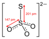

thiosulfate

Definition: Thiosulfate (IUPAC-recommended spelling; sometimes thiosulphate in British English) is an oxyanion of sulfur with the chemical formula S2O2−3. Thiosulfate also refers to the compounds containing this anion, which are the salts of thiosulfuric acid, e.g. sodium thiosulfate Na2S2O3. Thiosulfate also refers to the esters of thiosulfuric acid, e.g. O,S-dimethyl thiosulfate CH3−O−S(=O)2−S−CH3. The prefix thio- indicates that the thiosulfate is a sulfate with one oxygen replaced by sulfur. Thiosulfate is tetrahedral at the central S atom. Thiosulfate salts occur naturally. Thiosulfate ion has C3v symmetry, and is produced by certain biochemical processes. It rapidly dechlorinates water and is notable for its use to halt bleaching in the paper-making industry. Thiosulfate salts are mainly used in dying in textiles and the bleaching of natural substances.Sodium thiosulfate, commonly called hypo (from "hyposulfite"), was widely used in photography to fix black and white negatives and prints after the developing stage; modern 'rapid' fixers use ammonium thiosulfate as a fixing salt because it acts three to four times faster. Some bacteria can metabolise thiosulfates.
Source: Wikipedia
Wikipedia Page (Something wrong with this association? Let us know.)
Wikidata Page (Something wrong with this association? Let us know.)